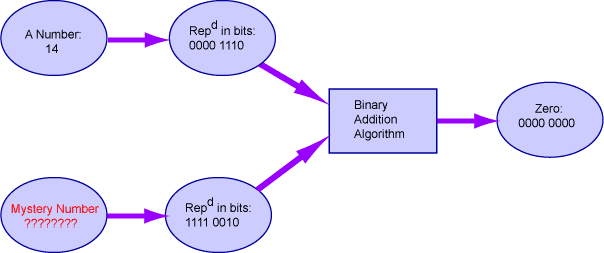

Might be -14.
The pattern "1111 0010" might be a good choice for "negative fourteen". In the picture, the only good choice for "Mystery Number" is negative fourteen.
For every bit pattern of N bits there is a corresponding bit pattern of N bits which produces an N-bit zero when the two patterns are used with the binary addition algorithm. Each pattern can be thought of as representing the negative of the number that is represented by the other pattern.
Find the 8-bit pattern that gives eight zero-bits when added to the bit pattern for 610. (Hint: start at the right column, figure out what the ? has to be in each column, and work your way left.)
0000 0110 = 610 ???? ???? = -610 ————————— ———— 0000 0000 010